Što ćeš na kraju imati
Jedan DWG i jedan PDF na A3 položenom: sklop uležištenja vretena PS1-10-000 – pogled uzduž osi (1:1), presjek A-A (2:1) s ležajem i uskočnicima, funkcijske kote, pozicije 1–7 i sastavnica. Polaziš od svog crteža iz V1 i pretvaraš ga u A3. Ovako izgleda PDF:

Prije početka pročitaj ovo (2 minute)
- „Klikni“ = jedan klik lijevom tipkom miša. „Upiši“ = tipkaj na tipkovnici.
- Nakon svakog upisa pritisni Enter. U okvirima Upiši uz svaki unos piše Enter – svaki put ga stvarno pritisni.
- Koordinate se pišu X,Y – zarez odvaja X i Y, npr.
210,297. Decimalni broj piše se s točkom, npr.148.5. - Točka
0,0je donji lijevi kut lista. X raste udesno, Y raste prema gore. Sve mjere su u milimetrima. - Pogriješio(la) si? Pritisni Esc (prekida naredbu), a Ctrl+Z poništava zadnju radnju.
- Za ovu vježbu treba ti gotova V1 (list s okvirom, zaglavljem, slojevima i stilom TD_ISO). Ako je nemaš, najprije napravi V1. Postupke iz V2 (kopiranje lista, TEXTEDIT, ispis 2:1) ovdje ponavljamo ukratko.
- Uz svaki korak je kvačica gotovo – označi je kad završiš korak, pa ćeš znati gdje si stao(la).
Ako nešto ne ide
- Piše „Unknown command“ – naredba nije bila pokrenuta. Pritisni Esc, pa ponovno klikni alat (ili upiši naredbu) i tek onda brojeve.
- Ne vidiš što si nacrtao(la) – upiši
ZOOMEnterEEnter. - Crte su na krivom mjestu – provjeri dio B (DYNMODE i OSMODE moraju biti 0) i jesi li pisao(la) točku, a ne zarez, u decimalnom broju.
- Ne znaš gdje si stao(la) – sve koordinate u tablicama su točne; nacrtano usporedi sa slikom koraka. Pogrešnu crtu klikni i pritisni Delete.
- Tekst se ne da kliknuti (TEXTEDIT) – približi ga (ZOOM W) i klikni točno na crtu slova.
- Crta je krive boje ili debljine – bila je odabran krivi sloj. Klikni crtu, pa u popisu slojeva na traci odaberi pravi sloj i pritisni Esc.
Sadržaj
- A. Otvori svoj crtež iz V1 i spremi ga kao V7
- B. Tri postavke na početku
- C. Obriši probu pisma iz V1
- D. Od A4 do A3 položenog
- E. Zaglavlje sklopnog crteža
- F. Stil kota TD_1-1
- G. Pogled uzduž osi (1:1)
- H. Presjek A-A (2:1) – nosač i ležaj
- I. Presjek A-A – vreteno, uskočnici, susjedni dio
- J. Funkcijske kote
- K. Pozicije
- L. Sastavnica
- R. Ispis u PDF (A3)
- Z. Spremi, vrati postavke i predaj
AOtvori svoj crtež iz V1 i spremi ga kao V7
1
Pokreni AutoCAD 2027. Na zaslonu Start, pod Recent, klikni sličicu svog crteža iz vježbe 1 (
TD_2026-2027_Prezime_Ime_V01). Ako ga nema, klikni Open… i pronađi ga.

2
Upiši
SAVEAS Enter. U polju File name upiši TD_2026-2027_Prezime_Ime_V07 (svoje prezime i ime) i klikni Save.Upiši:
SAVEAS Enter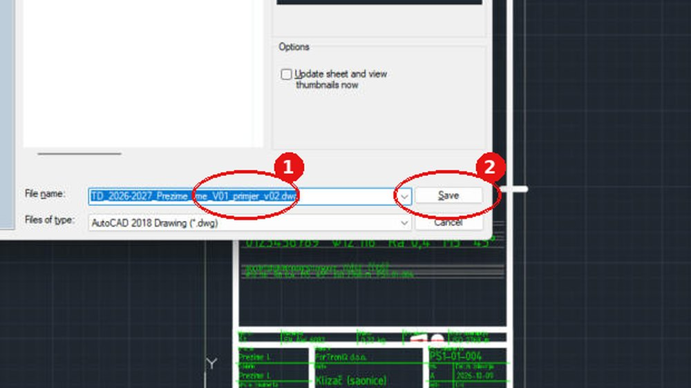

Na kartici crteža gore lijevo ime završava s V07. Crtež iz V1 ostao je netaknut.
BTri postavke na početku
3
Upiši redom (nakon svakog Enter):
| Naredba | Vrijednost | Zašto |
|---|---|---|
DYNMODE | 0 | broj koji upišeš znači točno mjesto na listu |
OSMODE | 0 | kursor ne „skače“ na obližnje točke |
GRIDMODE | 0 | nema mreže kvadratića |


CObriši probu pisma iz V1
4
Upiši
ERASE Enter, W Enter, 22,60 Enter, 198,285 Enter, pa još jednom Enter.Upiši:
ERASE Enter W Enter 22,60 Enter 198,285 Enter (Enter)

Proba pisma i pomoćne crte su obrisane, a okvir i zaglavlje su ostali.
DOd A4 do A3 položenog
5
Sklopni crtež treba više mjesta pa ide na A3 položeno (420 × 297). Zaglavlje iz V1 ne crtaš ponovno nego ga pomakneš u donji desni kut A3:
MOVE Enter W Enter 19,9 Enter 201,57 Enter Enter, bazna točka 0,0 Enter, druga točka 210,0 Enter.Upiši:
MOVE Enter W Enter 19,9 Enter 201,57 Enter (Enter) 0,0 Enter 210,0 EnterProzor 19,9 – 201,57 obuhvaća cijelo zaglavlje, a ne obuhvaća okvir lista (on ide do 287), pa se pomakne samo zaglavlje.
6
Obriši stari A4 okvir i oznake za centriranje:
ERASE Enter W Enter -1,-1 Enter 211,298 Enter Enter.Upiši:
ERASE Enter W Enter -1,-1 Enter 211,298 Enter (Enter)7
Nacrtaj A3 okvir: obrub lista (sloj 09_POMOCNE), okvir crteža 20 mm lijevo i 10 mm gore, desno i dolje (sloj 06_OKVIR) i četiri oznake za centriranje. Svaki redak tablice je jedna naredba. Upiši naredbu, Enter, pa redom vrijednosti iz retka – nakon svake Enter. Strelica → znači „sljedeća točka“. Kad se u retku promijeni sloj, najprije odaberi taj sloj.
LINE i PLINE bez slova C završi još jednim Enter.Upiši:
ZOOM Enter E Enter| # | Sloj | Naredba | Što upisuješ |
|---|---|---|---|
| 1 | 09_POMOCNE | PLINE | 0,0 → 420,0 → 420,297 → 0,297 → C |
| 2 | 06_OKVIR | PLINE | 20,10 → 410,10 → 410,287 → 20,287 → C |
| 3 | 06_OKVIR | LINE | 210,297 → 210,282 |
| 4 | 06_OKVIR | LINE | 210,0 → 210,10 |
| 5 | 06_OKVIR | LINE | 0,148.5 → 25,148.5 |
| 6 | 06_OKVIR | LINE | 420,148.5 → 405,148.5 |
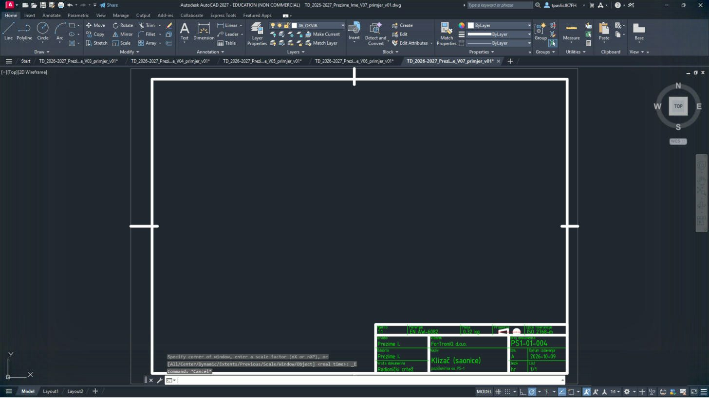
Položeni okvir A3, zaglavlje u donjem desnom kutu, oznake za centriranje na sredini svake stranice.
EZaglavlje sklopnog crteža
8
Približi zaglavlje:
ZOOM Enter, W Enter, 225,5 Enter, 415,60 Enter. Upiši TEXTEDIT Enter i promijeni tekstove (klik na tekst → upiši novi → Enter; na kraju Esc):Upiši:
ZOOM Enter W Enter 225,5 Enter 415,60 Enter TEXTEDIT Enter| Polje | Sada piše (iz V1) | Upiši |
|---|---|---|
| Mjerilo | 1:1 | 1:1; 2:1 |
| Materijal | EN AW-6082 | – |
| Masa | 0,32 kg | – |
| Vrsta dokumenta | Radionički crtež | Sklopni crtež |
| Naziv | Klizač (saonice) | Uležištenje vretena |
| ispod naziva | pozicionirna os PS-1 | fiksni kraj, os PS-1 |
| Broj dokumenta | PS1-01-004 | PS1-10-000 |
| Datum izdavanja | 2026-10-09 | 2026-11-20 |
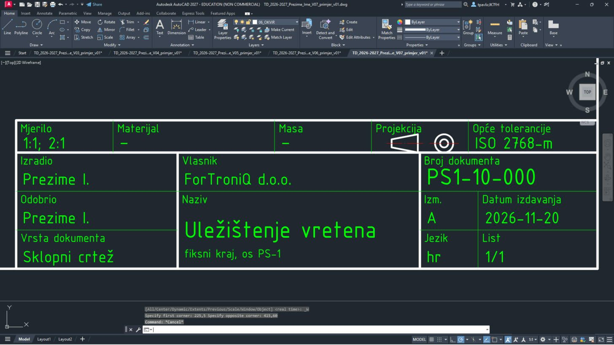
Na sklopnom crtežu materijal i masa su u sastavnici, zato u zaglavlju piše crtica. Dva mjerila (1:1; 2:1) jer je presjek A-A uvećan.
FStil kota TD_1-1
9
Isti stil kota kao u V4:
-DIMSTYLE Enter R Enter ISO-25 Enter, postavke iz tablice, na kraju -DIMSTYLE Enter S Enter TD_1-1 Enter.| # | Sloj | Naredba | Što upisuješ |
|---|---|---|---|
| 1 | -DIMSTYLE | R ISO-25 (vrati stil kota) | |
| 2 | DIMASZ | 3 | |
| 3 | DIMTXT | 3.5 | |
| 4 | DIMTXSTY | TD_ISO | |
| 5 | DIMSCALE | 1 | |
| 6 | DIMDEC | 0 | |
| 7 | DIMDSEP | , | |
| 8 | DIMTIH | 0 | |
| 9 | DIMTOH | 0 | |
| 10 | DIMTAD | 1 | |
| 11 | DIMEXO | 1 | |
| 12 | DIMEXE | 2 | |
| 13 | DIMGAP | 1 | |
| 14 | -DIMSTYLE | S TD_1-1 (spremi kao novi stil kota; ako pita Overwrite? – Y) |
GPogled uzduž osi (1:1)
10
Približi radni dio lista:
ZOOM Enter W Enter 20,112 Enter 420,268 Enter.Upiši:
ZOOM Enter W Enter 20,112 Enter 420,268 Enter11
Lijevo nacrtaj nosač vretena gledan uzduž osi vretena: obris, susjedni dio PS1-01-001 ispod njega (sloj 08_SUSJEDNI, crta-dvije točke), provrti, nevidljivi bridovi vijaka i oznaka rezne ravnine A-A:
| # | Sloj | Naredba | Što upisuješ |
|---|---|---|---|
| 1 | 01_VIDLJIVO | PLINE | 45,165 → 145,165 → 145,215 → 45,215 → C |
| 2 | 08_SUSJEDNI | PLINE | 35,155 → 155,155 → 155,165 → 35,165 → C |
| 3 | 03_OSI | LINE | 40,190 → 150,190 |
| 4 | 03_OSI | LINE | 95,161 → 95,219 |
| 5 | 01_VIDLJIVO | CIRCLE | središte 63,190, polumjer 6 |
| 6 | 03_OSI | LINE | 63,181 → 63,219 |
| 7 | 01_VIDLJIVO | CIRCLE | središte 127,190, polumjer 6 |
| 8 | 03_OSI | LINE | 127,181 → 127,219 |
| 9 | 01_VIDLJIVO | CIRCLE | središte 95,190, polumjer 14 |
| 10 | 04_KOTE | CIRCLE | središte 95,190, polumjer 11.7 |
| 11 | 04_KOTE | CIRCLE | središte 95,190, polumjer 8.3 |
| 12 | 01_VIDLJIVO | CIRCLE | središte 95,190, polumjer 6 |
| 13 | 02_NEVIDLJIVO | LINE | 61.35,196 → 61.35,215 |
| 14 | 02_NEVIDLJIVO | LINE | 64.65,196 → 64.65,215 |
| 15 | 02_NEVIDLJIVO | LINE | 61,196 → 65,196 |
| 16 | 02_NEVIDLJIVO | LINE | 61,202 → 65,202 |
| 17 | 02_NEVIDLJIVO | LINE | 125.35,196 → 125.35,215 |
| 18 | 02_NEVIDLJIVO | LINE | 128.65,196 → 128.65,215 |
| 19 | 02_NEVIDLJIVO | LINE | 125,196 → 129,196 |
| 20 | 02_NEVIDLJIVO | LINE | 125,202 → 129,202 |
| 21 | 03_OSI | LINE | 53,147 → 53,180 |
| 22 | 02_NEVIDLJIVO | LINE | 50.5,155 → 50.5,177 |
| 23 | 02_NEVIDLJIVO | LINE | 55.5,155 → 55.5,177 |
| 24 | 01_VIDLJIVO | PLINE | 48.75,150 → 57.25,150 → 57.25,155 → 48.75,155 → C |
| 25 | 03_OSI | LINE | 137,147 → 137,180 |
| 26 | 02_NEVIDLJIVO | LINE | 134.5,155 → 134.5,177 |
| 27 | 02_NEVIDLJIVO | LINE | 139.5,155 → 139.5,177 |
| 28 | 01_VIDLJIVO | PLINE | 132.75,150 → 141.25,150 → 141.25,155 → 132.75,155 → C |
| 29 | 01_VIDLJIVO | LINE | 95,219 → 95,223 |
| 30 | 01_VIDLJIVO | LINE | 95,161 → 95,157 |
| 31 | 04_KOTE | -DIMSTYLE | R TD_1-1 (vrati stil kota) |
| 32 | 04_KOTE | LEADER | strelica 102,223 → kraj 95,223, Enter, Enter, N (strelica bez teksta) |
| 33 | 04_KOTE | TEXT | točka 104,221.25, visina 3.5, kut 0, tekst A |
| 34 | 04_KOTE | LEADER | strelica 102,157 → kraj 95,157, Enter, Enter, N (strelica bez teksta) |
| 35 | 04_KOTE | TEXT | točka 104,155.25, visina 3.5, kut 0, tekst A |
| 36 | 04_KOTE | TEXT | točka 45,238, visina 3.5, kut 0, tekst Pogled uzduž osi (1:1) |
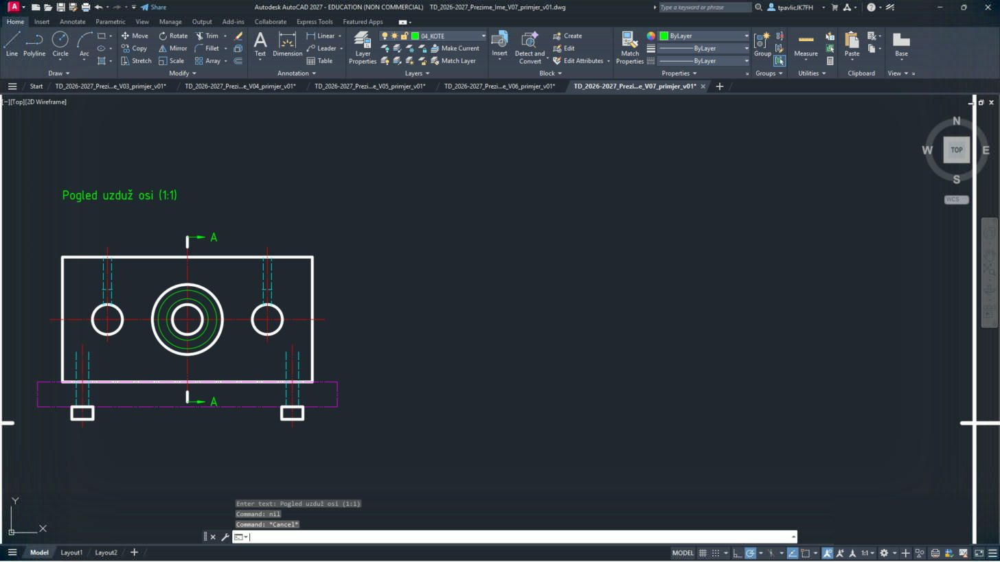
Pravokutnik nosača s tri provrta, ljubičasti obris susjednog dijela ispod, plave crtkane rupe vijaka, strelice A i natpis Pogled uzduž osi (1:1).
Susjedni dio se crta tankom crtom s dvije točke (ISO 128-2, tip 05.1) – pokazuje gdje se sklop ugrađuje, ali nije dio sklopa.
HPresjek A-A (2:1) – nosač i ležaj
12
Desno nacrtaj presjek A-A dvostruko uvećan (2:1) – sve mjere iz presjeka množiš s 2. Najprije presječeni nosač s utorima za uskočnik:
| # | Sloj | Naredba | Što upisuješ |
|---|---|---|---|
| 1 | 01_VIDLJIVO | PLINE | 255,240 → 295,240 → 295,212 → 277,212 → 277,218 → 261,218 → 261,219.4 → 258.4,219.4 → 258.4,218 → 255,218 → C |
| 2 | 05_SRAFURA | -HATCH | P, ANSI31, mjerilo 0.5, kut 0, W, N, granica: 255,240 → 295,240 → 295,212 → 277,212 → 277,218 → 261,218 → 261,219.4 → 258.4,219.4 → 258.4,218 → 255,218 → C, na kraju Enter |
| 3 | 01_VIDLJIVO | PLINE | 255,140 → 295,140 → 295,168 → 277,168 → 277,162 → 261,162 → 261,160.6 → 258.4,160.6 → 258.4,162 → 255,162 → C |
| 4 | 05_SRAFURA | -HATCH | P, ANSI31, mjerilo 0.5, kut 0, W, N, granica: 255,140 → 295,140 → 295,168 → 277,168 → 277,162 → 261,162 → 261,160.6 → 258.4,160.6 → 258.4,162 → 255,162 → C, na kraju Enter |
| 5 | 03_OSI | LINE | 207,190 → 353,190 |
13
Kuglični ležaj 6001: unutarnji i vanjski prsten šrafiraš pod drugim kutom (
90) nego nosač, kuglice su kružnice bez šrafure:| # | Sloj | Naredba | Što upisuješ |
|---|---|---|---|
| 1 | 01_VIDLJIVO | PLINE | 261,213.4 → 277,213.4 → 277,218 → 261,218 → C |
| 2 | 05_SRAFURA | -HATCH | P, ANSI31, mjerilo 0.5, kut 90, W, N, granica: 261,213.4 → 277,213.4 → 277,218 → 261,218 → C, na kraju Enter |
| 3 | 01_VIDLJIVO | PLINE | 261,202 → 277,202 → 277,206.6 → 261,206.6 → C |
| 4 | 05_SRAFURA | -HATCH | P, ANSI31, mjerilo 0.5, kut 90, W, N, granica: 261,202 → 277,202 → 277,206.6 → 261,206.6 → C, na kraju Enter |
| 5 | 01_VIDLJIVO | CIRCLE | središte 269,210, polumjer 3.8 |
| 6 | 01_VIDLJIVO | PLINE | 261,166.6 → 277,166.6 → 277,162 → 261,162 → C |
| 7 | 05_SRAFURA | -HATCH | P, ANSI31, mjerilo 0.5, kut 90, W, N, granica: 261,166.6 → 277,166.6 → 277,162 → 261,162 → C, na kraju Enter |
| 8 | 01_VIDLJIVO | PLINE | 261,178 → 277,178 → 277,173.4 → 261,173.4 → C |
| 9 | 05_SRAFURA | -HATCH | P, ANSI31, mjerilo 0.5, kut 90, W, N, granica: 261,178 → 277,178 → 277,173.4 → 261,173.4 → C, na kraju Enter |
| 10 | 01_VIDLJIVO | CIRCLE | središte 269,170, polumjer 3.8 |
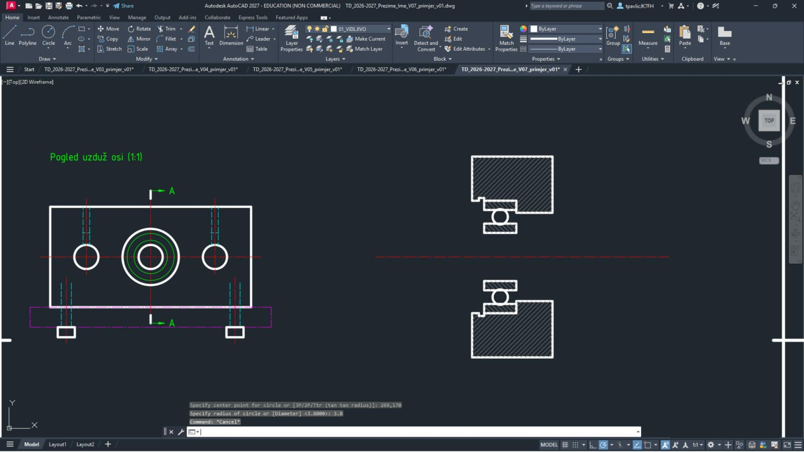
Gore i dolje presječeni nosač (šrafura 45°), u njemu prstenovi ležaja (šrafura u drugom smjeru) i kuglica.
U sklopnom crtežu svaki dio ima svoju šrafuru: susjedni dijelovi se razlikuju smjerom ili razmakom crta.
IPresjek A-A – vreteno, uskočnici, susjedni dio
14
Vreteno se u uzdužnom presjeku ne šrafira (puno vratilo). Crta se prekinuto s valovitim krajevima; trapezni navoj Tr12 desno je naznačen tankim crtama:
| # | Sloj | Naredba | Što upisuješ |
|---|---|---|---|
| 1 | 01_VIDLJIVO | LINE | 215,202 → 345,202 |
| 2 | 01_VIDLJIVO | LINE | 215,178 → 345,178 |
| 3 | 04_KOTE | PLINE | 215,202 → 217,196 → 213.4,190 → 217,184 → 215,178, Enter |
| 4 | 04_KOTE | PLINE | 345,202 → 347,196 → 343.4,190 → 347,184 → 345,178, Enter |
| 5 | 04_KOTE | LINE | 303,198.5 → 345,198.5 |
| 6 | 04_KOTE | LINE | 303,181.5 → 345,181.5 |
| 7 | 01_VIDLJIVO | LINE | 303,202 → 303,178 |
15
Uskočnici (DIN 472 u provrtu, DIN 471 na vratilu) su mali pravokutnici u utorima:
| # | Sloj | Naredba | Što upisuješ |
|---|---|---|---|
| 1 | 01_VIDLJIVO | PLINE | 258.6,214.8 → 261,214.8 → 261,219.4 → 258.6,219.4 → C |
| 2 | 01_VIDLJIVO | PLINE | 259,201.5 → 261,201.5 → 261,205.2 → 259,205.2 → C |
| 3 | 01_VIDLJIVO | PLINE | 277,201.5 → 279,201.5 → 279,205.2 → 277,205.2 → C |
| 4 | 01_VIDLJIVO | PLINE | 258.6,160.6 → 261,160.6 → 261,165.2 → 258.6,165.2 → C |
| 5 | 01_VIDLJIVO | PLINE | 259,174.8 → 261,174.8 → 261,178.5 → 259,178.5 → C |
| 6 | 01_VIDLJIVO | PLINE | 277,174.8 → 279,174.8 → 279,178.5 → 277,178.5 → C |
16
Susjedni dio PS1-01-001 ispod presjeka i natpisi:
| # | Sloj | Naredba | Što upisuješ |
|---|---|---|---|
| 1 | 08_SUSJEDNI | LINE | 225,140 → 325,140 |
| 2 | 08_SUSJEDNI | LINE | 225,120 → 325,120 |
| 3 | 04_KOTE | TEXT | točka 327,124, visina 3.5, kut 0, tekst PS1-01-001 (susjedni dio) |
| 4 | 04_KOTE | TEXT | točka 227,250, visina 5, kut 0, tekst A-A (2:1) |
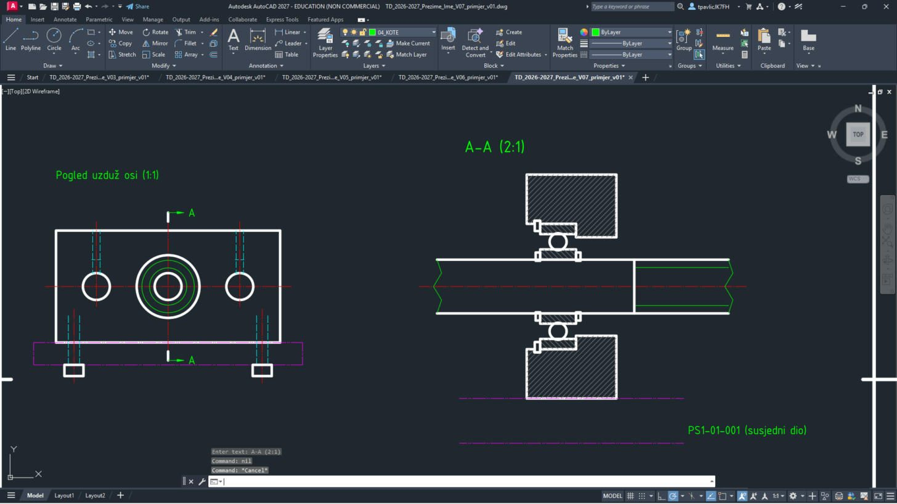
Vreteno kroz ležaj, uskočnici uz prstenove, ljubičaste crte susjednog dijela i natpisi A-A (2:1) i PS1-01-001 (susjedni dio).
JFunkcijske kote
17
Na sklopnom crtežu kotiraju se samo mjere važne za ugradnju i dosjede: razmak vijaka 64, širina 20 i visina osi 25 te dosjedi Ø28 H7 i Ø12 k6. U presjeku 2:1 tekst kote upisuješ (
T) jer je izmjerena udaljenost dvostruka.| # | Sloj | Naredba | Što upisuješ |
|---|---|---|---|
| 1 | 04_KOTE | DIMLINEAR | 255,240 → 295,240, T Enter tekst 20, H, mjesto kotne crte 275,248 |
| 2 | 04_KOTE | DIMLINEAR | 225,140 → 239,190, T Enter tekst 25, V, mjesto kotne crte 219,165 |
| 3 | 04_KOTE | LEADER | strelica 255.8,218.4 → kraj 235,232, Enter, tekst: %%c28 H7 (svaki redak Enter, na kraju još Enter) |
| 4 | 04_KOTE | LEADER | strelica 243,178 → kraj 231,158, Enter, tekst: %%c12 k6 (svaki redak Enter, na kraju još Enter) |
| 5 | 04_KOTE | DIMLINEAR | 63,219 → 127,219, H, mjesto kotne crte 95,226 |
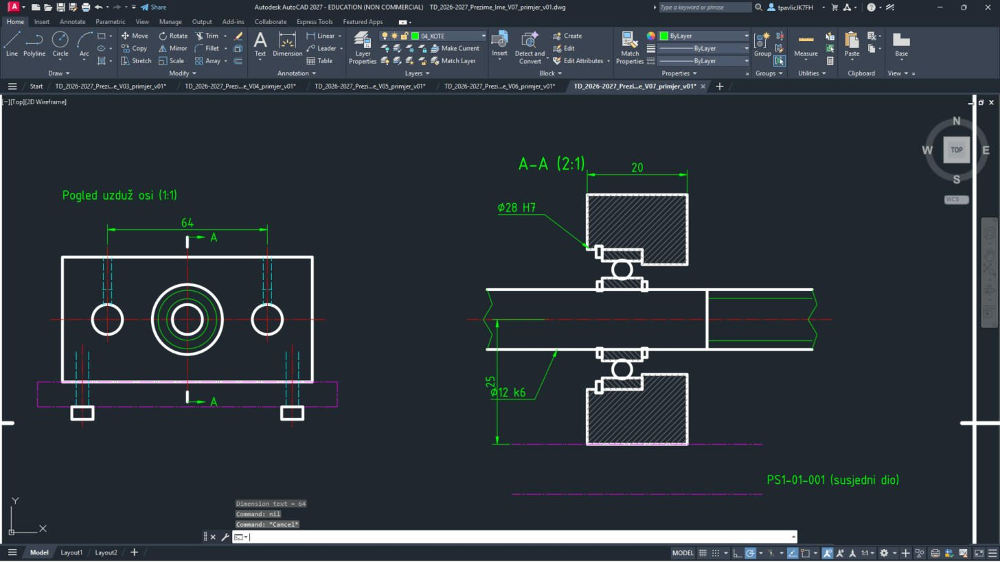
64 iznad pogleda, 20 i 25 uz presjek, Ø28 H7 i Ø12 k6 s pokaznim crtama.
Posebni znakovi:
%%c = Ø; × upiši kao \U+00D7. Hrvatska slova (č, ć, š, ž) upisuješ izravno.KPozicije
18
Svaki dio dobiva poziciju (ISO 6433): kružić Ø10, pokazna crta i točka na dijelu (mala kružnica ispunjena šrafurom
SOLID), broj visine 5 mm. Pozicije 1–7 rasporedi oko crteža, brojeve po redu:| # | Sloj | Naredba | Što upisuješ |
|---|---|---|---|
| 1 | 04_KOTE | CIRCLE | središte 33,240, polumjer 5 |
| 2 | 04_KOTE | LINE | 35.6609,235.7668 → 55,205 |
| 3 | 04_KOTE | CIRCLE | središte 55,205, polumjer 0.6 |
| 4 | 04_KOTE | -HATCH | P, SOLID, mjerilo _W, kut _N, W, N, granica: 55,205.6 → 54.5757,205.4243 → 54.4,205 → 54.5757,204.5757 → 55,204.4 → 55.4243,204.5757 → C, na kraju Enter |
| 5 | 04_KOTE | TEXT | točka 31.4,237.5, visina 5, kut 0, tekst 1 |
| 6 | 04_KOTE | CIRCLE | središte 347,234, polumjer 5 |
| 7 | 04_KOTE | LINE | 344.7639,229.5279 → 331,202 |
| 8 | 04_KOTE | CIRCLE | središte 331,202, polumjer 0.6 |
| 9 | 04_KOTE | -HATCH | P, SOLID, mjerilo _W, kut _N, W, N, granica: 331,202.6 → 330.5757,202.4243 → 330.4,202 → 330.5757,201.5757 → 331,201.4 → 331.4243,201.5757 → C, na kraju Enter |
| 10 | 04_KOTE | TEXT | točka 345.4,231.5, visina 5, kut 0, tekst 2 |
| 11 | 04_KOTE | CIRCLE | središte 315,258, polumjer 5 |
| 12 | 04_KOTE | LINE | 311.4645,254.4645 → 273,216 |
| 13 | 04_KOTE | CIRCLE | središte 273,216, polumjer 0.6 |
| 14 | 04_KOTE | -HATCH | P, SOLID, mjerilo _W, kut _N, W, N, granica: 273,216.6 → 272.5757,216.4243 → 272.4,216 → 272.5757,215.5757 → 273,215.4 → 273.4243,215.5757 → C, na kraju Enter |
| 15 | 04_KOTE | TEXT | točka 313.4,255.5, visina 5, kut 0, tekst 3 |
| 16 | 04_KOTE | CIRCLE | središte 283,258, polumjer 5 |
| 17 | 04_KOTE | LINE | 280.4914,253.6748 → 259.8,218 |
| 18 | 04_KOTE | CIRCLE | središte 259.8,218, polumjer 0.6 |
| 19 | 04_KOTE | -HATCH | P, SOLID, mjerilo _W, kut _N, W, N, granica: 259.8,218.6 → 259.3757,218.4243 → 259.2,218 → 259.3757,217.5757 → 259.8,217.4 → 260.2243,217.5757 → C, na kraju Enter |
| 20 | 04_KOTE | TEXT | točka 281.4,255.5, visina 5, kut 0, tekst 4 |
| 21 | 04_KOTE | CIRCLE | središte 327,142, polumjer 5 |
| 22 | 04_KOTE | LINE | 322.8921,144.8504 → 278,176 |
| 23 | 04_KOTE | CIRCLE | središte 278,176, polumjer 0.6 |
| 24 | 04_KOTE | -HATCH | P, SOLID, mjerilo _W, kut _N, W, N, granica: 278,176.6 → 277.5757,176.4243 → 277.4,176 → 277.5757,175.5757 → 278,175.4 → 278.4243,175.5757 → C, na kraju Enter |
| 25 | 04_KOTE | TEXT | točka 325.4,139.5, visina 5, kut 0, tekst 5 |
| 26 | 04_KOTE | CIRCLE | središte 157,135, polumjer 5 |
| 27 | 04_KOTE | LINE | 153.1903,138.2382 → 137,152 |
| 28 | 04_KOTE | CIRCLE | središte 137,152, polumjer 0.6 |
| 29 | 04_KOTE | -HATCH | P, SOLID, mjerilo _W, kut _N, W, N, granica: 137,152.6 → 136.5757,152.4243 → 136.4,152 → 136.5757,151.5757 → 137,151.4 → 137.4243,151.5757 → C, na kraju Enter |
| 30 | 04_KOTE | TEXT | točka 155.4,132.5, visina 5, kut 0, tekst 6 |
| 31 | 04_KOTE | CIRCLE | središte 157,240, polumjer 5 |
| 32 | 04_KOTE | LINE | 154,236 → 127,200 |
| 33 | 04_KOTE | CIRCLE | središte 127,200, polumjer 0.6 |
| 34 | 04_KOTE | -HATCH | P, SOLID, mjerilo _W, kut _N, W, N, granica: 127,200.6 → 126.5757,200.4243 → 126.4,200 → 126.5757,199.5757 → 127,199.4 → 127.4243,199.5757 → C, na kraju Enter |
| 35 | 04_KOTE | TEXT | točka 155.4,237.5, visina 5, kut 0, tekst 7 |
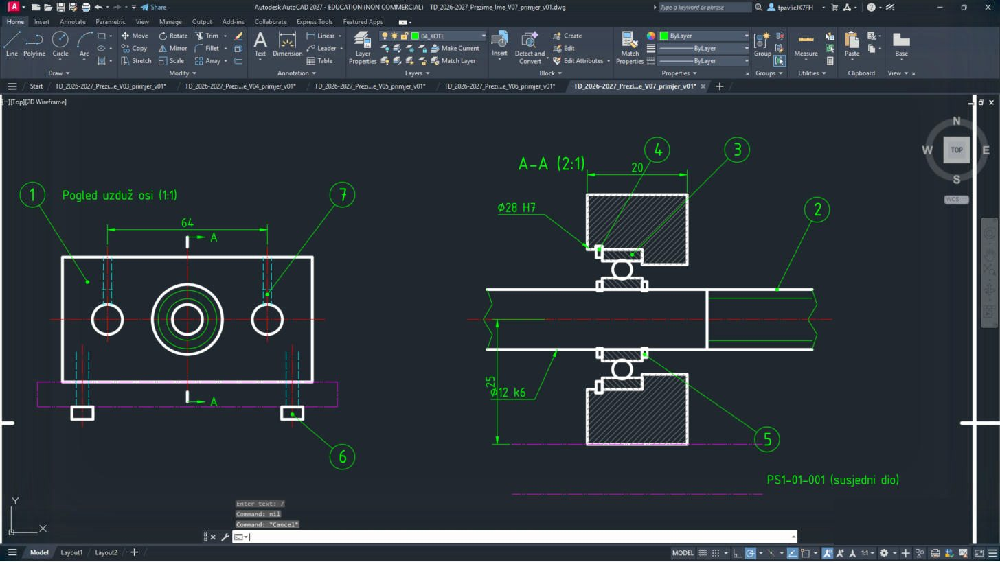
Sedam kružića s brojevima 1–7 i pokaznim crtama koje završavaju točkom na dijelu.
Pokazna crta pozicije ide prema središtu kružića i ne smije se križati s drugom pokaznom crtom ni ići usporedno s crtama šrafure.
LSastavnica
19
Sastavnica stoji odmah iznad zaglavlja, ista širina (180 mm). Zaglavlje sastavnice (Poz., Naziv, Kom., Crtež / norma, Materijal) je dolje, a pozicije se nižu prema gore:
Upiši:
ZOOM Enter W Enter 225,50 Enter 415,118 Enter| # | Sloj | Naredba | Što upisuješ |
|---|---|---|---|
| 1 | 06_OKVIR | PLINE | 230,56 → 410,56 → 410,112 → 230,112 → C |
| 2 | 04_KOTE | LINE | 230,63 → 410,63 |
| 3 | 04_KOTE | LINE | 230,70 → 410,70 |
| 4 | 04_KOTE | LINE | 230,77 → 410,77 |
| 5 | 04_KOTE | LINE | 230,84 → 410,84 |
| 6 | 04_KOTE | LINE | 230,91 → 410,91 |
| 7 | 04_KOTE | LINE | 230,98 → 410,98 |
| 8 | 04_KOTE | LINE | 230,105 → 410,105 |
| 9 | 06_OKVIR | LINE | 230,63 → 410,63 |
| 10 | 04_KOTE | LINE | 242,56 → 242,112 |
| 11 | 04_KOTE | LINE | 300,56 → 300,112 |
| 12 | 04_KOTE | LINE | 312,56 → 312,112 |
| 13 | 04_KOTE | LINE | 352,56 → 352,112 |
| 14 | 04_KOTE | TEXT | točka 231.2,58.2, visina 3.5, kut 0, tekst Poz. |
| 15 | 04_KOTE | TEXT | točka 243.2,58.2, visina 3.5, kut 0, tekst Naziv |
| 16 | 04_KOTE | TEXT | točka 301.2,58.2, visina 3.5, kut 0, tekst Kom. |
| 17 | 04_KOTE | TEXT | točka 313.2,58.2, visina 3.5, kut 0, tekst Crtež / norma |
| 18 | 04_KOTE | TEXT | točka 353.2,58.2, visina 3.5, kut 0, tekst Materijal |
| 19 | 04_KOTE | TEXT | točka 231.2,65, visina 2.5, kut 0, tekst 1 |
| 20 | 04_KOTE | TEXT | točka 243.2,65, visina 2.5, kut 0, tekst Nosač vretena, fiksni kraj |
| 21 | 04_KOTE | TEXT | točka 301.2,65, visina 2.5, kut 0, tekst 1 |
| 22 | 04_KOTE | TEXT | točka 313.2,65, visina 2.5, kut 0, tekst PS1-01-002 |
| 23 | 04_KOTE | TEXT | točka 353.2,65, visina 2.5, kut 0, tekst EN AW-6082 T6 |
| 24 | 04_KOTE | TEXT | točka 231.2,72, visina 2.5, kut 0, tekst 2 |
| 25 | 04_KOTE | TEXT | točka 243.2,72, visina 2.5, kut 0, tekst Trapezno vreteno Tr12 \U+00D7 3 \U+00D7 360 |
| 26 | 04_KOTE | TEXT | točka 301.2,72, visina 2.5, kut 0, tekst 1 |
| 27 | 04_KOTE | TEXT | točka 313.2,72, visina 2.5, kut 0, tekst PS1-01-006 |
| 28 | 04_KOTE | TEXT | točka 353.2,72, visina 2.5, kut 0, tekst C45 |
| 29 | 04_KOTE | TEXT | točka 231.2,79, visina 2.5, kut 0, tekst 3 |
| 30 | 04_KOTE | TEXT | točka 243.2,79, visina 2.5, kut 0, tekst Kuglični ležaj 6001 |
| 31 | 04_KOTE | TEXT | točka 301.2,79, visina 2.5, kut 0, tekst 1 |
| 32 | 04_KOTE | TEXT | točka 313.2,79, visina 2.5, kut 0, tekst ISO 15 |
| 33 | 04_KOTE | TEXT | točka 353.2,79, visina 2.5, kut 0, tekst kupovni dio |
| 34 | 04_KOTE | TEXT | točka 231.2,86, visina 2.5, kut 0, tekst 4 |
| 35 | 04_KOTE | TEXT | točka 243.2,86, visina 2.5, kut 0, tekst Uskočnik za provrt 28 |
| 36 | 04_KOTE | TEXT | točka 301.2,86, visina 2.5, kut 0, tekst 1 |
| 37 | 04_KOTE | TEXT | točka 313.2,86, visina 2.5, kut 0, tekst DIN 472 |
| 38 | 04_KOTE | TEXT | točka 353.2,86, visina 2.5, kut 0, tekst opružni čelik |
| 39 | 04_KOTE | TEXT | točka 231.2,93, visina 2.5, kut 0, tekst 5 |
| 40 | 04_KOTE | TEXT | točka 243.2,93, visina 2.5, kut 0, tekst Uskočnik za vratilo 12 |
| 41 | 04_KOTE | TEXT | točka 301.2,93, visina 2.5, kut 0, tekst 2 |
| 42 | 04_KOTE | TEXT | točka 313.2,93, visina 2.5, kut 0, tekst DIN 471 |
| 43 | 04_KOTE | TEXT | točka 353.2,93, visina 2.5, kut 0, tekst opružni čelik |
| 44 | 04_KOTE | TEXT | točka 231.2,100, visina 2.5, kut 0, tekst 6 |
| 45 | 04_KOTE | TEXT | točka 243.2,100, visina 2.5, kut 0, tekst Vijak M5 \U+00D7 20 |
| 46 | 04_KOTE | TEXT | točka 301.2,100, visina 2.5, kut 0, tekst 2 |
| 47 | 04_KOTE | TEXT | točka 313.2,100, visina 2.5, kut 0, tekst ISO 4762 |
| 48 | 04_KOTE | TEXT | točka 353.2,100, visina 2.5, kut 0, tekst 8.8, pocinčano |
| 49 | 04_KOTE | TEXT | točka 231.2,107, visina 2.5, kut 0, tekst 7 |
| 50 | 04_KOTE | TEXT | točka 243.2,107, visina 2.5, kut 0, tekst Zatični vijak M4 \U+00D7 6 |
| 51 | 04_KOTE | TEXT | točka 301.2,107, visina 2.5, kut 0, tekst 2 |
| 52 | 04_KOTE | TEXT | točka 313.2,107, visina 2.5, kut 0, tekst ISO 4026 |
| 53 | 04_KOTE | TEXT | točka 353.2,107, visina 2.5, kut 0, tekst 45H |
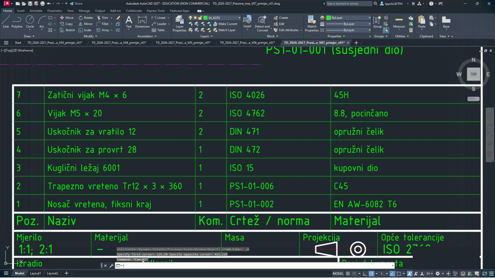
Tablica sa sedam redaka: nosač, vreteno, ležaj, dva uskočnika, vijci i zatični vijci, s normama i materijalima.
Približi sastavnicu prije pisanja:
ZOOM W 225,50 415,118. Broj pozicije u sastavnici mora biti isti kao u kružiću na crtežu.20
Cijeli list:
ZOOM Enter E Enter.Upiši:
ZOOM Enter E Enter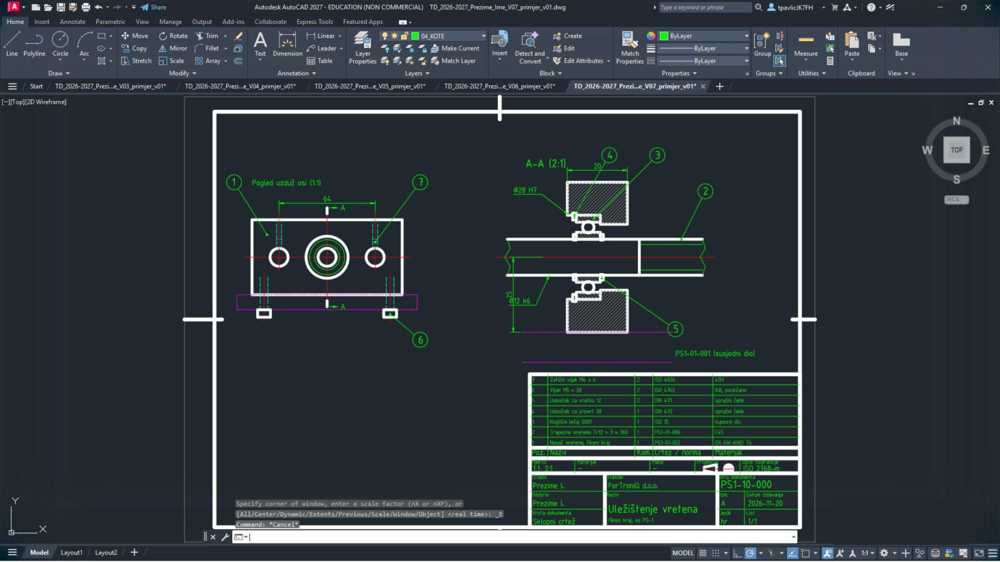
Gotov sklopni crtež na A3: pogled, presjek A-A (2:1), kote, pozicije, sastavnica i zaglavlje.
RIspis u PDF (A3)
21
Pritisni Ctrl + P. Ovaj put promijeni papir: u Paper size odaberi ISO full bleed A3 (420.00 x 297.00 MM), a u Drawing orientation Landscape. Ostalo ostaje kao u V1 (DWG To PDF.pc3, Window, Center the plot, monochrome.ctb).

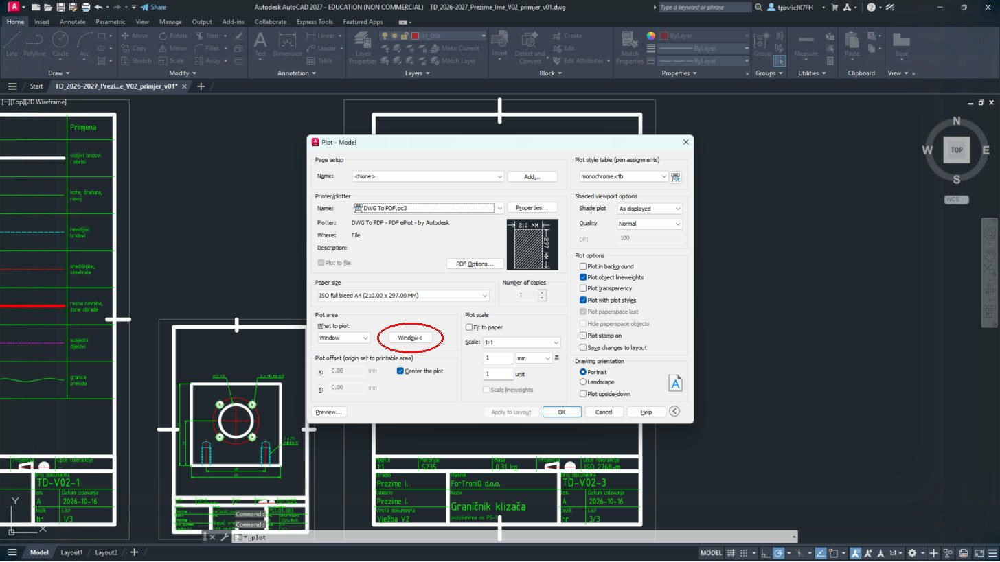
Ako ostane A4, AutoCAD će list smanjiti ili odrezati – provjeri pregled (Preview) prije OK.
22
Klikni Window<, upiši kutove, namjesti Scale 1:1, klikni OK i spremi PDF:
| List | Window – prvi kut | Window – drugi kut | Scale | Ime PDF-a |
|---|---|---|---|---|
| 1 – sklopni crtež (A3) | 0,0 | 420,297 | 1:1 | TD_2026-2027_Prezime_Ime_V07_L1 |


ZSpremi, vrati postavke i predaj
23
Vrati postavke:
DYNMODE → 3, OSMODE → 4133, GRIDMODE → 1; zatim QSAVE Enter.Upiši:
DYNMODE Enter 3 Enter OSMODE Enter 4133 Enter GRIDMODE Enter 1 Enter QSAVE Enter24
U sustavu za predaju, u zadaći za V7, predaj
TD_2026-2027_Prezime_Ime_V07.dwg i …_L1.pdf, uz ispunjen radni list.Prije predaje otvori svaki PDF i usporedi ga sa slikom na vrhu upute.